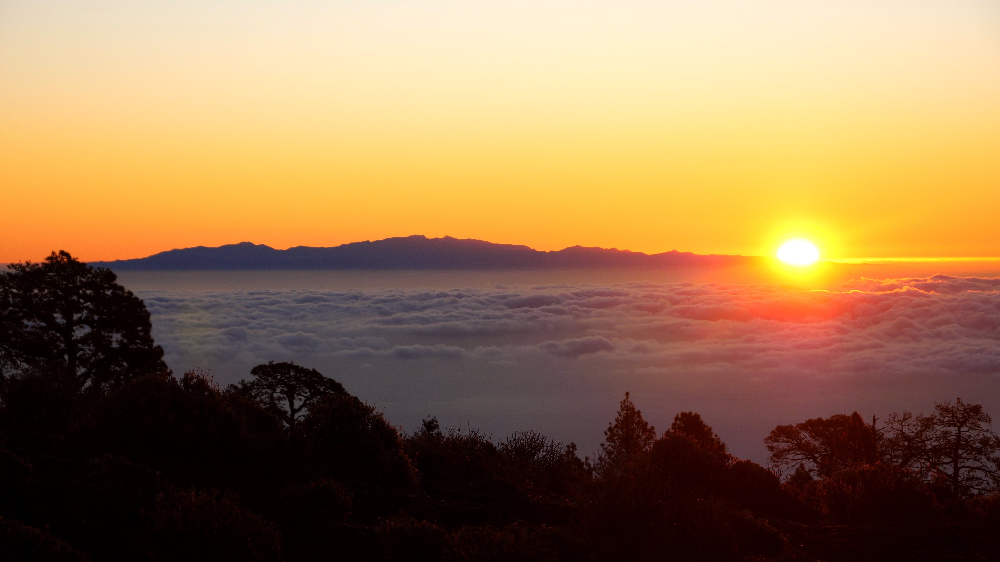
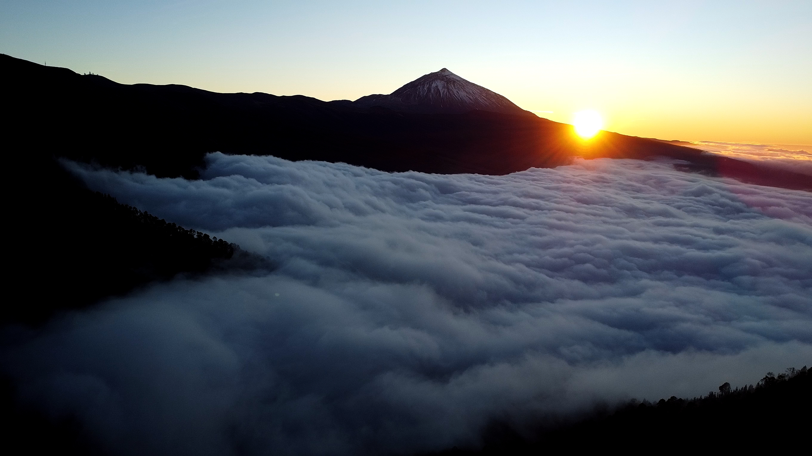

6 Tage durch Teneriffa
Tag 1: Vilaflor – Teide
Nachdem wir nach unserer Landung auf der Insel festgestellt hatten, dass der erste Bus erst gegen 18:30 Uhr in Richtung Vilaflor, dem Startpunkt unserer Reise, fahren sollte, entschieden wir uns nach kurzer Wartezeit und Absprache für ein Taxi. So konnten wir unsere Tour bereits am späten Nachmittag im höchstgelegenen Dorf Spaniens, Vilaflor, auf rund 1400 Metern Höhe beginnen.

Von dort an ging es stetig bergauf. Die Sonne sank langsam und tauchte den Wald, durch den wir wanderten, in ein kräftiges Rot. Wir passierten einen ersten Vorgeschmack auf die spätere Mondlandschaft, die Paisaje Lunar, zu der wir ursprünglich einen kleinen Umweg einplanen wollten. Da es jedoch zunehmend dunkler wurde und noch einige Höhenmeter bis zu unserem Schlafplatz vor uns lagen, entschieden wir uns, auf die zusätzliche Strecke zu verzichten.

Kurz vor unserem Schlafplatz, den ich bereits von einer früheren Tour auf der Insel kannte, trafen wir noch auf eine Wanderin in unserem Alter, die den Trail in entgegengesetzter Richtung, von Las Esperanza nach Arona, gelaufen war. Sie warnte uns vor einem kommenden Abschnitt mit starkem Bushwhacking. Nach einem kurzen Austausch verabschiedeten wir uns und nahmen die Warnung ernst.

Wir beschlossen, unser Lager einige hundert Meter entfernt auf einem Plateau aufzuschlagen. Von dort aus bot sich uns ein perfekter Blick auf den Sonnenuntergang, inklusive einer beeindruckenden Cloud Inversion. Müde, aber zufrieden zogen wir uns schließlich in unsere Zelte zurück und ließen den ersten Tag auf dem Trail ruhig ausklingen..
